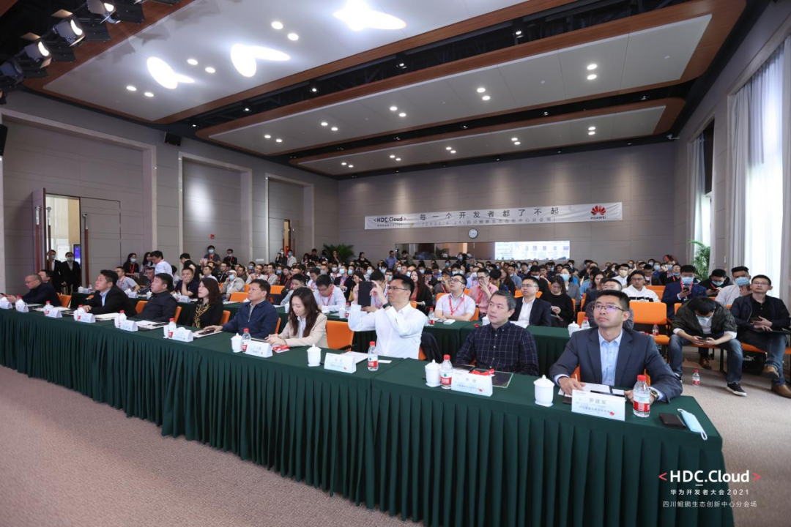
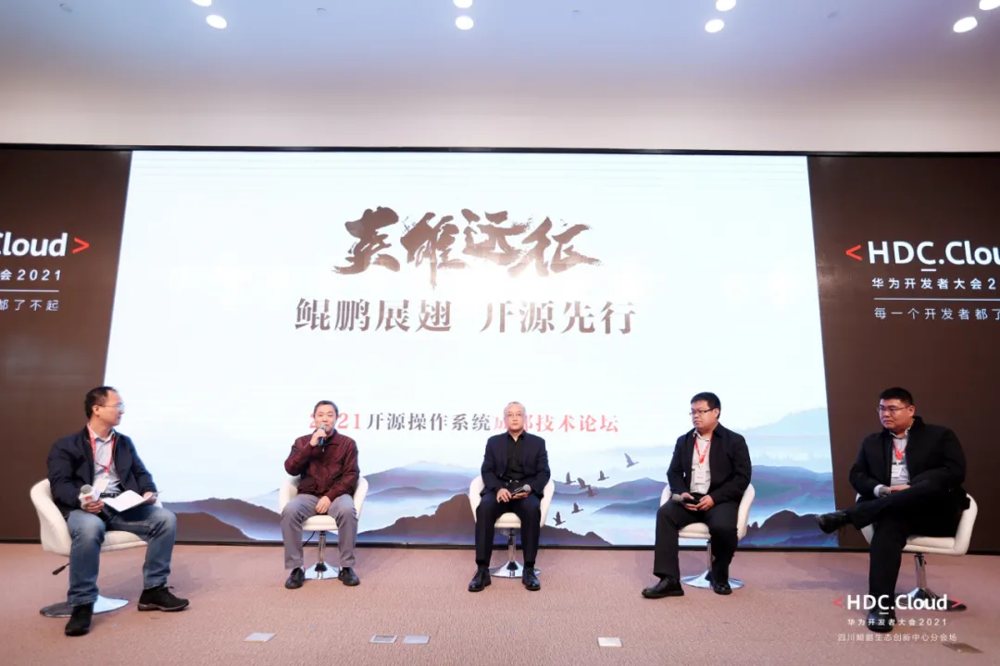

活动 | 万里做客华为开发者大会成都站，解读行业关注话题
随着云计算、大数据、人工智能等数字科技的不断成熟应用，以云与AI为核心的全场景智慧时代正在加速而来，利用数字技术推动产业变革的步伐也越来越快。在这一背景下，华为开发者大会2021（Cloud）四川鲲鹏生态创新中心分会于4月25日在天府英才中心正式召开，旨在分享云计算、大数据、人工智能领域的前沿技术、发展趋势和应用实践，推动四川本土企业数字化转型进程的同时，为全球ICT行业开发者建立更出色的发展环境和更优质的沟通交流平台。

活动中，中国信息通信研究院两化所电子信息产业与创新研究部副主任袁媛、华为开源社区运营经理曹志等多位嘉宾发表主题演讲，共同探讨基础软件以及完善的生态在数字经济增长的重要作用。
在圆桌论坛环节中，万里数据库范传超受邀与硬件、操作系统、数据库等领域的专家，围绕鲲鹏、开源、助力计算产业以及计算产业和鲲鹏、软件之间的关系展开讨论，就目前行业内普遍关注的大背景下机会点如何把握、生态发展的策略、产品成功实践和下一步规划等几个问题发表看法，进一步点燃了现场的讨论热情。

万里数据库（右1）参与圆桌论坛
01
Q
在大背景下，国产数据库的机会点在哪？怎么抓住机会点发展？
A
万里数据库自2010年就开始看好并自主研发分布式数据库，当时国内还没有一款国产分布式数据库，是一片蓝海市场。之所以选择分布式数据库方向，主要基于业务和技术两方面的考虑：
从技术角度看，主要是受到云计算的启发，团队认为弹性化、分布式是数据库发展大势。
从业务角度看，Oracle等传统数据库厂商已牢牢占据集中式数据库市场，只有另辟蹊径才有新出路。
随着当前大数据、5G、物联网等技术的飞速发展，数据量会越来越大，而金融、运营商、电力等具有交易属性的行业，将会产生更大的数据，集中式数据库将无法满足系统可持续发展的需求，因此分布式将会成为这些行业的核心主流架构，因此我们只要坚定这个方向不动摇，就一定能够抓住大机会。
02
Q
生态很关键，请聊一聊生态发展中的战略及策略。
A
公司致力于打造全面的信创产业生态，万里数据库产品已经与国内主流的芯片、操作系统、服务器完成了全面适配。
子公司拓林思基于openEuler打造了一款针对AArch64处理器架构的操作系统发行版Turbolinux Enterprise Service 15，并深度参与openEuler社区，创建GNOME、Xfce2个SIG组。
我们的策略是在现有生态体系的基础上，我们力求与合作伙伴互利共赢，打造全方位一体化的数字解决方案，并通过客户项目、产品兼容测试、解决方案适配等多个维度，推动公司产品与更多的国内优秀的软硬件厂商完成适配，扩大我们的生态版图。
03
Q
请总结市场端的成功实践，以及你们下一步的规划。
A
近几年，万里数据库先后与国家电网、光大银行、中国移动等行业头部企业取得了项目合作，并成功入围央采名录。
2020年，我们成功目标中移动联合创新OLTP分布式数据库项目，在分布式数据库评标中总得分排名第一，中标份额为60%，被安信证券誉为“国产数据库最大黑马”。
在金融领域，公司产品稳定支撑了云缴费、统一支付等业务，与光大银行基于万里数据库源码联合研发了EverDB数据库并建立联合实验室。
未来，公司将继续加码信创产业链生态，通过产品技术创新，打造持续领先的分布式数据库产品，通过产力共融，与合作伙伴一同为用户提供优质的产品和一体化解决方案。
基础软件是工程化很深的东西，需要市场、技术、场景等多维度的试炼，十多年来，万里数据库凭借丰富的分布式数据库产品开发和实施经验，具备了大规模、多场景的部署和应用基础，将为信创产业提供坚实有力的支撑。
推荐阅读1. 热点 | 聚焦两会科技创新 万里数据库交出“数据库创新产品奖”完美答卷
2. 深度 | 你真的了解分布式数据库吗？
3. 老鱼笔记 | 万里数据库是一家怎样的公司？

扫码二维码
关注公众号